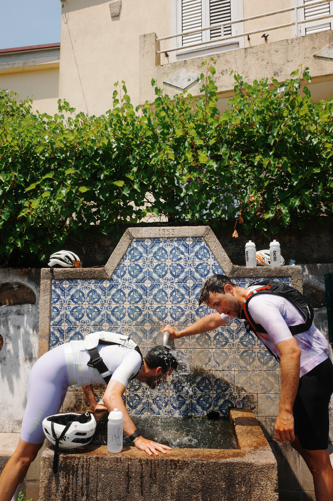
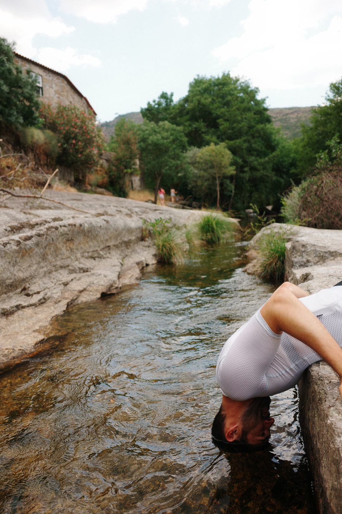
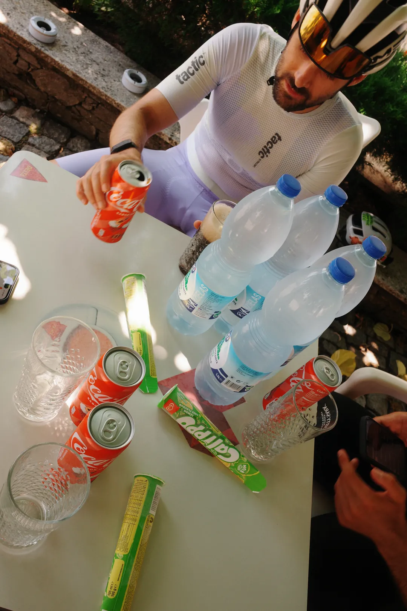
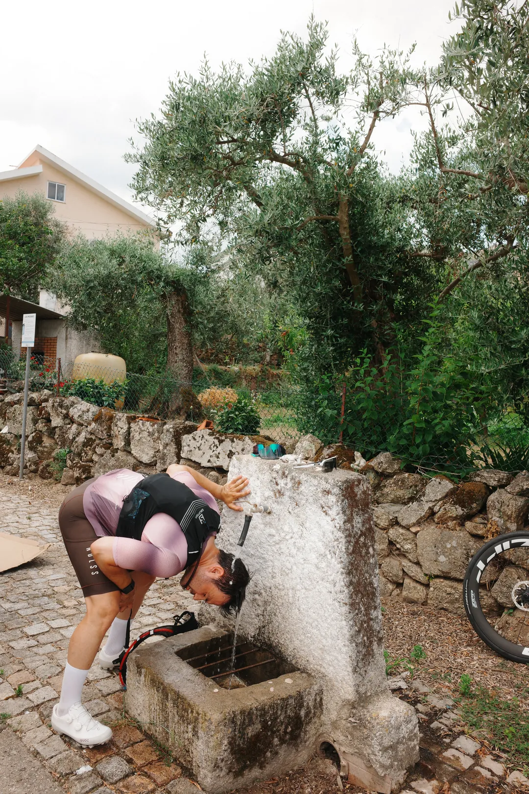
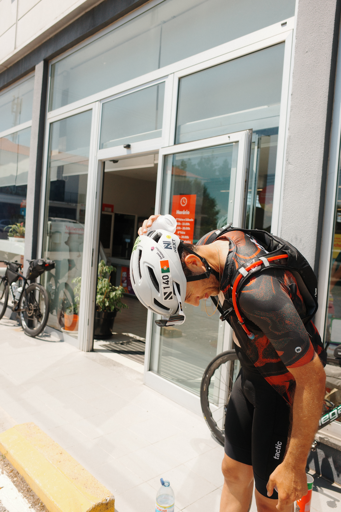

There's a temperature at which your usual ride nutrition quietly stops working. It isn't dramatic. You don't blow up at 30 °C the way you might at 40 °C — you just fade a bit earlier than expected, your legs feel flat on the last climb, and you write it off as a bad day.
It usually isn't a bad day. It's that the bottle and the gel that carried you comfortably through an 18 °C spring ride are now covering roughly half of what you're losing. And the half you're missing most isn't the water. It's the salt.
What heat actually costs you

Three things happen at once when the air gets hot, and only one of them is obvious.
You sweat more. That's the obvious one. What's less obvious is how much: the difference between a mild day and a genuinely hot one isn't a sip here and there, it's hundreds of millilitres every hour.
Your blood has to do two jobs. It has to deliver oxygen to your legs and carry heat out to your skin so you can dump it. Those two jobs compete for the same litres. As you dehydrate, blood volume drops and your heart compensates by beating faster to move the same amount — which is why your heart rate creeps up on a hot ride even as your power drifts down. That's not weakness. That's plumbing.
You lose salt, not just water. Sweat isn't distilled water. It carries sodium, and how much depends on you and on how hard you're sweating. Replace the water but not the salt and you end up with the worst of both worlds: still short on sodium, and now diluting what's left.
The first of those is why people drink more in summer. The third is the one almost nobody sizes properly — and it's the one that moves the most.
How much should you drink when it's hot?
Air temperature is the biggest single lever, so it's the right place to start. Summit works in bands rather than a single formula, because bands are honest about the fact that nobody knows your sweat rate to the millilitre:
| Air temperature | Starting point |
|---|---|
| Below 10 °C | 350 mL/h |
| 10–17 °C | 500 mL/h |
| 18–23 °C | 650 mL/h |
| 24–29 °C | 850 mL/h |
| 30 °C and above | 1,000 mL/h |
A starting point, not the answer — this is the figure before your effort level and the humidity are taken into account.
Then two more things adjust it, both of which you can feel but rarely quantify.
How hard you're going. An endurance pace and a threshold effort don't produce the same heat inside you. Riding hard adds up to a fifth on top of the temperature band.
How humid it is. This is the one riders underrate. Sweat doesn't cool you — evaporating sweat cools you. In dry air it evaporates and does its job. In humid air it runs off your arms and drips onto your top tube, which means you paid the full fluid cost and got very little cooling in return. So humid days need more fluid, not less: you're losing the same water and getting less for it. A 28 °C day at 90% humidity is genuinely harder than the thermometer suggests.
And if you've ever measured your own sweat rate — weigh yourself before and after a ride, add back what you drank — that number is better than any table, and Summit will use it instead. With one deliberate adjustment: it plans for about 80% of what you sweat, because almost nobody can drink everything they lose, and a target you can't hit is worse than no target at all.
Why one litre an hour is the ceiling
Whatever the temperature, whatever the humidity, there's a point past which "drink more" stops being good advice. Around a litre an hour is it.
Two reasons. First, most riders simply can't absorb much more than that — the rest sits in your stomach sloshing around making you feel awful, which is its own kind of race-ruining. Second, and more seriously: drinking large volumes of plain water while sweating out salt is how riders end up hyponatraemic — blood sodium diluted low enough to cause real harm. It's rare, and it happens most often to well-intentioned people drinking hard on a hot day precisely because they read that dehydration is dangerous.
More is not better
Past about a litre an hour, extra fluid stops helping and starts creating a different problem. The fix for a hot day isn't more water — it's the same water with more sodium in it.
Sodium is the number that really moves

Here's the part that surprises people.
Your sodium target is built from your fluid target — how much you're drinking, times how salty your sweat is — and then only about 70% of that loss gets replaced while you ride. That last part is deliberate: you're not trying to break even mid-ride. You're trying to stay functional until the finish. The rest is recovered afterwards, at the table, where it's easy and where you're not trying to swallow it out of a bidon.
Then heat gets applied on top. From around 26 °C the sodium target steps up by roughly a third; from 30 °C it goes up by half.
Why extra, when the fluid figure already went up? Because sweat gets saltier the harder you sweat. Your sweat glands reclaim some sodium on the way out, and at high sweat rates they can't keep up — so a hot-day litre of sweat carries more salt than a mild-day litre.
Which means sodium scales twice: once because you're drinking more, and again because every litre now costs you more salt. Fluid hits a ceiling quickly. Sodium doesn't. That asymmetry is the whole reason a rider can do everything right on the water front and still finish a hot gran fondo cramping, foggy and flat.
A real example: three hours, two very different days
A 70 kg rider, three hours at a solid tempo pace, 60% humidity, average sweat saltiness. Same rider, same route, same effort — only the weather changes.
| 18 °C | 33 °C | Change | |
|---|---|---|---|
| Fluid | 750 mL/h | 1,000 mL/h | +33% |
| Sodium | 400 mg/h | 850 mg/h | +113% |
| Carbohydrate | 75 g/h | 75 g/h | no change |
| Across three hours | 2.25 L · 1,200 mg | 3.0 L · 2,550 mg |
Worked from the same model Summit uses to build a race-day plan. Your own numbers depend on your weight, your effort, your sweat profile and the forecast — this is the shape, not a prescription.
The fluid difference is real but manageable: one extra bottle. The sodium difference is a completely different plan. Twelve hundred milligrams across three hours is comfortably covered by an ordinary sports drink. Two and a half thousand is not — that's a deliberate choice of stronger mix, or salt capsules, or both, decided before you leave the house.
If you take one row from this article, take the middle one.
What changes when you're used to the heat

Spend ten days or more genuinely exposed to heat and your body rebuilds the whole cooling system. Two adaptations matter here, and they pull in opposite directions.
You sweat earlier and more. That sounds like a downside; it isn't. Starting to sweat sooner means you start cooling sooner, which is exactly the point.
Your sweat gets less salty. Your body learns to hold onto sodium and lets water through instead. Same cooling, cheaper in salt.
So an acclimatised rider on a hot day needs slightly more fluid and noticeably less sodium — in the example above, the hot-day sodium target drops from 850 to about 700 mg/h. It looks contradictory written down. It's just two adaptations doing different jobs, and it's why "acclimatised" is a setting worth telling Summit about rather than a vague feeling.
It's also why "I did a hot event last summer and I was fine" is not evidence you'll be fine in May. Acclimatisation fades within a couple of weeks. The first hot day of the year is the dangerous one, every year.
Planning a summer target event?
Get the season-planning sheet — base, build, peak and taper, as a worksheet you fill in with your own numbers. Free, plus the occasional data-driven training note. No spam.
Start before you start
On a hot day, rolling out already slightly down on fluid is a hole you never climb out of — because you can't drink more than a litre an hour to catch up. The deficit just follows you around all morning.
So the plan begins an hour before you leave: roughly 5 mL of fluid per kilo of bodyweight — about 350 mL for a 70 kg rider — carrying around half of your hourly sodium target. For the hot day above, that's a small bottle with roughly 450 mg of sodium in it.
The salt in that pre-load isn't decoration. Plain water an hour before the start largely ends up in the toilets at the start line. With sodium in it, far more of it stays where you need it.
The concentrated-bottle trap
The tempting answer to a long, hot day is one bottle that solves everything: all your carbs, all your salt, one strong mix, fewer stops.
It backfires. A drink much stronger than about 9% carbohydrate leaves your stomach slowly, and while it's sitting there it isn't hydrating you — it can even pull water into your gut to dilute itself. On a cool day that's a minor inefficiency. On a 33 °C day, when getting fluid into your bloodstream is the thing keeping your core temperature survivable, it's the wrong trade entirely.
Hot days want dilute bottles, with the carbohydrate coming from gels and food alongside — which is the opposite of what feels efficient when you're packing. This is exactly the sort of thing Summit flags before you ride rather than letting you discover it at kilometre 80: if the drink you've told it you're carrying is too concentrated for the plan it's building, it says so.
Two kinds of hot

Not all heat deserves the same advice, and treating 30 °C and 40 °C as the same thing is how warnings lose their meaning.
From 30 °C. This is where real heat strain begins for sustained endurance efforts. The instruction is simple: drink from minute zero, more often than feels necessary, with salt in it. Don't wait for thirst — on a hot day thirst shows up after the deficit does.
From 35 °C. Above this, hydration alone stops being the answer, and the advice changes shape: ease your pace, and cool yourself actively wherever you can — ice, shade, water over your head and down your neck. Once it's that hot, cooling your skin does more for your core temperature than another 200 mL would.
That's the distinction Summit draws on a race-day plan, and it matters, because calling 30 °C "extreme" leaves you no words for the day you actually need them.
Two things the numbers won't tell you
Worth knowing, because a plan you follow blindly is only as good as what it can't see.
Heat can shrink your appetite for solid food. Your carbohydrate target doesn't drop just because it's hot — in the example above, 75 g/h is 75 g/h on both days, and your muscles don't care about the weather. But heat pushes blood away from your gut toward your skin, and plenty of riders find bars and chews go down badly when it's baking. If that's you, shift more of those carbs into liquid and gels rather than quietly eating less. The target doesn't change; the format should.
Humidity doesn't announce itself. It's fully accounted for in how much you should be drinking, but there's no thermometer reading that warns you about it. Check it the night before alongside the temperature — a muggy 28 °C deserves the respect you'd give a dry 33 °C.
The short version
- Fluid rises with heat but tops out around a litre an hour. That ceiling is a safety decision, not a limitation.
- Sodium rises roughly twice as fast, because heat makes you sweat more and makes your sweat saltier.
- Pre-load an hour before you roll out, with salt in it. You can't catch up later.
- Dilute your bottles on hot days and take the carbs separately.
- Above 35 °C, pacing and active cooling beat drinking.
- Ten days of heat exposure changes your numbers. Two weeks away undoes it.
None of this is complicated. It's just specific — and specific is exactly what gets lost somewhere between reading an article in July and standing in your kitchen at 6 a.m. wondering how many scoops to put in the bottle.
Let Summit do the arithmetic
Everything above is a decision someone has to make before you ride: how much fluid an hour, how much sodium, how much carbohydrate, when to take it, and what to actually put in each bottle. Summit makes those decisions for your event. It pulls the forecast temperature and humidity for your start line, sizes fluid and sodium against your weight, your effort and your own sweat profile, checks it against the products you actually carry — and hands you a timed plan, hour by hour, that you can follow without doing sums in your head at 6 a.m.
No weather to type in. No guessing at the salt. Not a chatbot with opinions — sports-science maths, applied to your ride and your body.
Get the season-planning template
The base/build/peak/taper structure as a worksheet you fill in with your own CTL and event date — free. Then a few data-driven training notes across the season. Unsubscribe anytime.